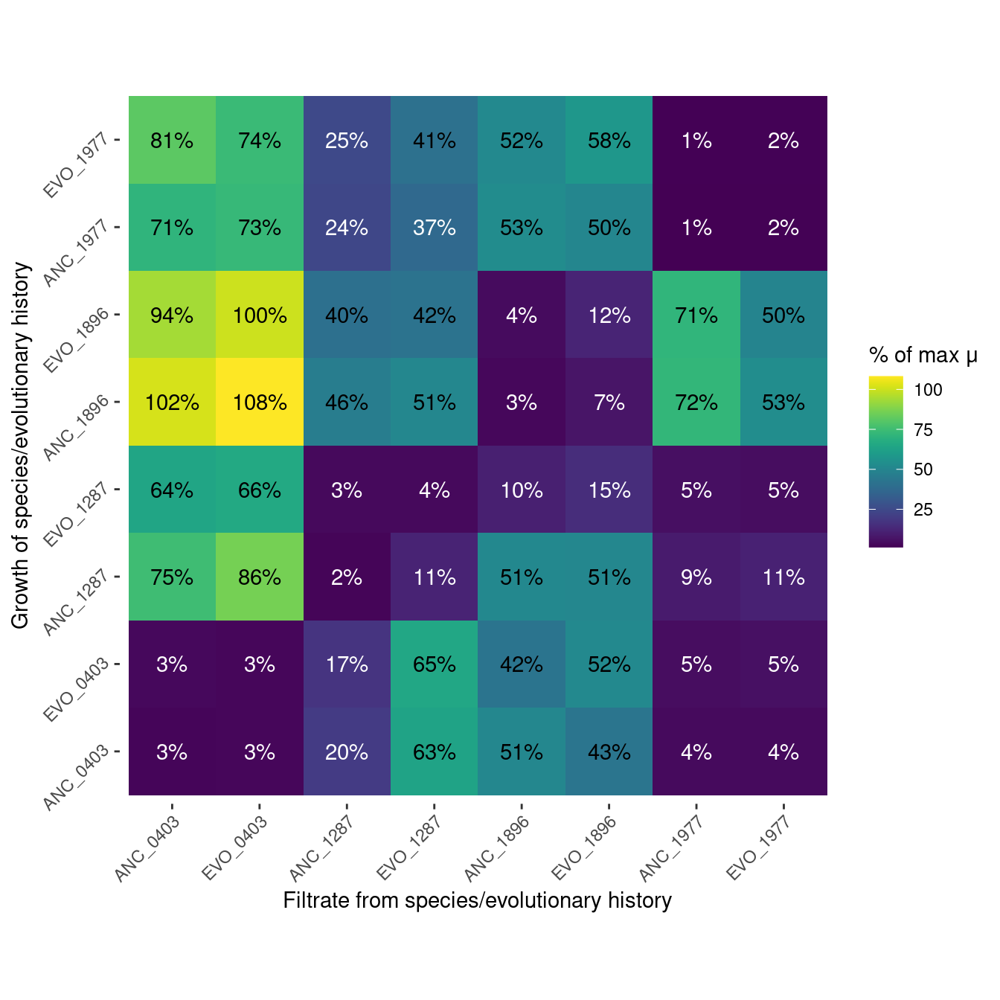

Analyzing monoculture growth summary
1 Introduction
In the prior step we imported, smoothed, and calculated summary statistics for the species growth in monocultures. These monocultures include experiments either with 100% R2A and different levels of streptomycin or with no streptomycin and the pairwise filtrates from all other species.
Here we will do some simple plots and analysis of the growth data. We will also look into the filtrate data.
2 Setup
2.1 Libraries
2.2 Global variables
2.3 Read growth summary data
Show/hide code
many_auc_res <- readr::read_tsv(here::here(data, "gcurve_auc_results.tsv"))
many_spline_res <- readr::read_tsv(here::here(data, "gcurve_spline_results.tsv"))
many_linear_res <- readr::read_tsv(here::here(data, "gcurve_linear_results.tsv"))
many_baranyi_res <- readr::read_tsv(here::here(data, "gcurve_baranyi_results.tsv"))
many_huang_res <- readr::read_tsv(here::here(data, "gcurve_huang_results.tsv"))3 Select and format
The past notebook showed that different nonparametric and parametric models fit the data with different degrees of quality. Overall, it appears that the Huang parametric model fits the data the best so we will default to using the Huang growth rates. If the Huang doesn’t fit well
Moving forward we’ll use Huang-derived growth rates if the fit looks good. Otherwise we will go with the spline estimate which seemed to perform pretty well and was quite flexible.
Here we determine a threshold for filtering out cultures that don’t grow as 1.25\(\times\) the mean minimum optical density of all cultures. For these cultures growth rates estimates are not really reliable.
Show/hide code
[1] 0.1019044Show/hide code
best_parametric <- bind_rows(
dplyr::select(many_huang_res, plate_name:sp_filtrate, y0, mumax, K, r2) %>% mutate(model = "huang"),
dplyr::select(many_baranyi_res, plate_name:sp_filtrate, y0, mumax, K, r2) %>% mutate(model = "baranyi")) %>%
arrange(plate_name, bioscreen_well) %>%
group_by(plate_name, bioscreen_well) %>%
filter(r2 == max(r2)) %>%
ungroup()The Huang model fits best for about 75% of all growth curves.
4 Update!!
After looking at this more and more I think for the rest of this analysis we will just go with the spline non-parametric fits. Sometimes the Huang model fits really really well, but other times it doesn’t. It’s not worth going into every single growth curve to find out
5 Monoculture growth with streptomycin
We’ll now examine how the monoculture growth changed with respect to evolutionary history and streptomycin concentrations
5.1 Growth rates
Show/hide code
gr_strep <- many_spline_res %>%
filter(!str_detect(plate_name, "pairwise")) %>%
mutate(hist = str_split_i(sp_hist, "_", 1),
sp = str_split_i(sp_hist, "_", 2)) %>%
summarize(ggplot2::mean_cl_boot(mumax), .by=c(sp, hist, strep_conc)) %>%
ggplot(aes(x = strep_conc, y = y)) +
geom_linerange(aes(ymin = ymin, ymax = ymax, color = hist)) +
geom_line(aes(color = hist), lty=2) +
geom_point(aes(color = hist)) +
labs(y = "Maximum per capita growth rate μ (hr-1)", x = "Streptomycin conc. (μg/ml)",
color = "Evolutionary\nhistory") +
facet_grid(~sp) +
scale_x_continuous(trans="log1p", breaks = c(0, 1, 10, 100, 1000, 5000))
ggsave(
here::here("figs", "monoculture_gr_strep.svg"),
gr_strep,
width = 10,
height = 4,
units = "in",
device = "svg"
)
ggsave(
here::here("figs", "monoculture_gr_strep.png"),
gr_strep,
width = 10,
height = 4,
units = "in",
device = "png"
)
5.2 AUC (area under the growth curve)
Show/hide code
auc_strep <- many_auc_res %>%
filter(!str_detect(plate_name, "pairwise")) %>%
mutate(hist = str_split_i(sp_hist, "_", 1),
sp = str_split_i(sp_hist, "_", 2)) %>%
summarize(ggplot2::mean_cl_boot(auc), .by=c(sp, hist, strep_conc)) %>%
ggplot(aes(x = strep_conc, y = y)) +
geom_linerange(aes(ymin = ymin, ymax = ymax, color = hist)) +
geom_line(aes(color = hist), lty=2) +
geom_point(aes(color = hist)) +
labs(y = "Total area under the growth curve", x = "Streptomycin conc. (μg/ml)",
color = "Evolutionary\nhistory") +
facet_grid(~sp) +
scale_x_continuous(trans="log1p", breaks = c(0, 1, 10, 100, 1000, 5000))
ggsave(
here::here("figs", "monoculture_auc_strep.svg"),
auc_strep,
width = 10,
height = 4,
units = "in",
device = "svg"
)
ggsave(
here::here("figs", "monoculture_auc_strep.png"),
auc_strep,
width = 10,
height = 4,
units = "in",
device = "png"
)6 Pairwise filtrate growth
This is information about how well each species grew on the filtrate of all the species.
many_auc_res
Show/hide code
Show/hide code
plot_heatmap <- function(df, fill_var, fill_lab){
ggplot(df, aes(x = sp_filtrate, y = sp_hist)) +
geom_tile(aes(fill = {{fill_var}})) +
geom_text(aes(label = paste0(round({{fill_var}}), "%"), color = {{fill_var}} > 40)) +
scale_x_discrete(guide = guide_axis(angle = 45)) +
scale_y_discrete(guide = guide_axis(angle = 45)) +
scale_fill_viridis() +
scale_color_manual(values = c("white", "black"), guide = "none") +
labs(y = "Growth of species/evolutionary history", x = "Filtrate from species/evolutionary history",
fill = fill_lab) +
coord_fixed() +
ggplot2::theme(panel.grid = element_blank(),
panel.background = element_blank(),
strip.background = element_blank(),
panel.border = element_blank())
}6.1 Growth rate
Show/hide code
gr_max <- many_spline_res %>%
filter(strep_conc == 0) %>%
summarize(m_max = mean(mumax), .by=c(sp_hist))
gr_filtrate <- many_spline_res %>%
filter(str_detect(plate_name, "pairwise")) %>%
summarize(m_filt = mean(mumax), .by=c(sp_hist, sp_filtrate)) %>%
left_join(gr_max, by = join_by(sp_hist)) %>%
mutate(m_rel = m_filt/m_max*100) %>%
mutate(sp_filtrate = factor(sp_filtrate, levels =c("ANC_0403", "EVO_0403", "ANC_1287", "EVO_1287", "ANC_1896",
"EVO_1896", "ANC_1977", "EVO_1977")),
sp_hist = factor(sp_hist, levels = c("ANC_0403", "EVO_0403", "ANC_1287", "EVO_1287", "ANC_1896",
"EVO_1896", "ANC_1977", "EVO_1977")))
gr_filtrate_plot <- plot_heatmap(gr_filtrate, m_rel, "% of max μ")
6.2 AUC (area under the growth curve)
Show/hide code
auc_max <- many_auc_res %>%
filter(strep_conc == 0) %>%
summarize(auc_max = mean(auc), .by=c(sp_hist))
auc_filtrate <- many_auc_res %>%
filter(str_detect(plate_name, "pairwise")) %>%
summarize(auc_filt = mean(auc), .by=c(sp_hist, sp_filtrate)) %>%
left_join(auc_max, by = join_by(sp_hist)) %>%
mutate(auc_rel = auc_filt/auc_max*100) %>%
mutate(sp_filtrate = factor(sp_filtrate, levels =c("ANC_0403", "EVO_0403", "ANC_1287", "EVO_1287", "ANC_1896",
"EVO_1896", "ANC_1977", "EVO_1977")),
sp_hist = factor(sp_hist, levels = c("ANC_0403", "EVO_0403", "ANC_1287", "EVO_1287", "ANC_1896",
"EVO_1896", "ANC_1977", "EVO_1977")))
auc_filtrate_plot <- plot_heatmap(auc_filtrate, auc_rel, "% of max AUC")